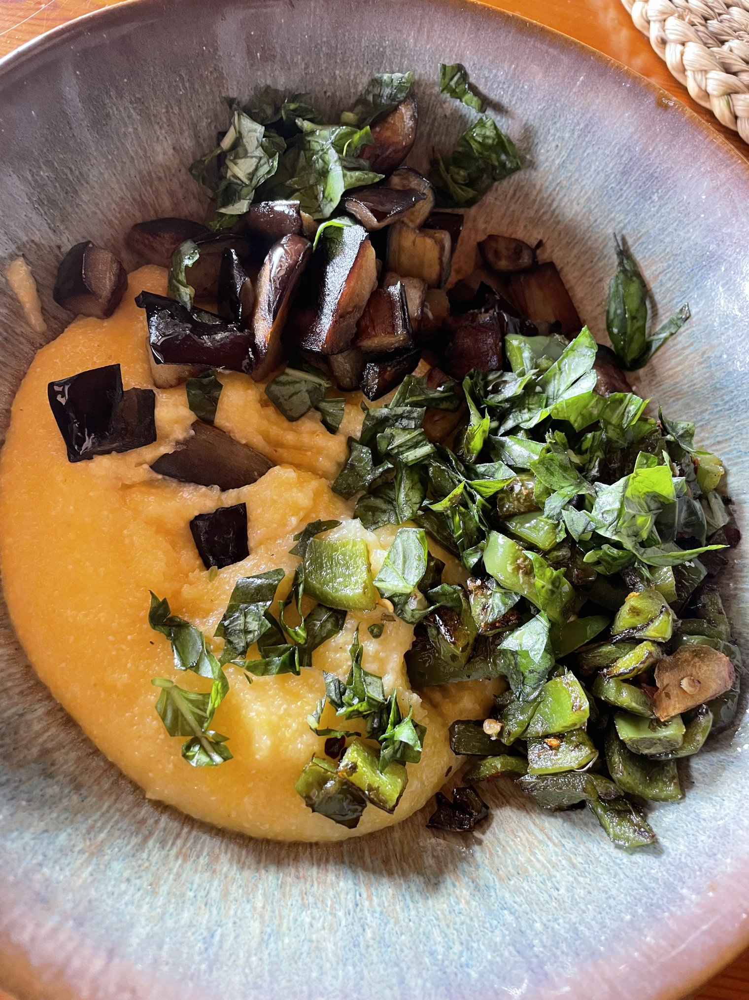

Polenta con parmesano, berenjena y pimiento frito con albahaca
Ingredients
2×
- 100 g de polenta
- 400 ml de agua
- 30 g de parmesano rallado
- 1 berenjena
- 1 pimiento verde
- aceite de oliva
- sal
- albahaca

Preparación
Paso 1
Cocer 100 g de polenta en 400 ml de agua con sal, removiendo, hasta que espese. Añadir 30 g de parmesano rallado.
Paso 2
Cortar 1 berenjena en dados y 1 pimiento verde en trozos y freírlos en la sartén con aceite de oliva y sal.
Paso 3
Servir la polenta con la berenjena y el pimiento por encima y albahaca picada.